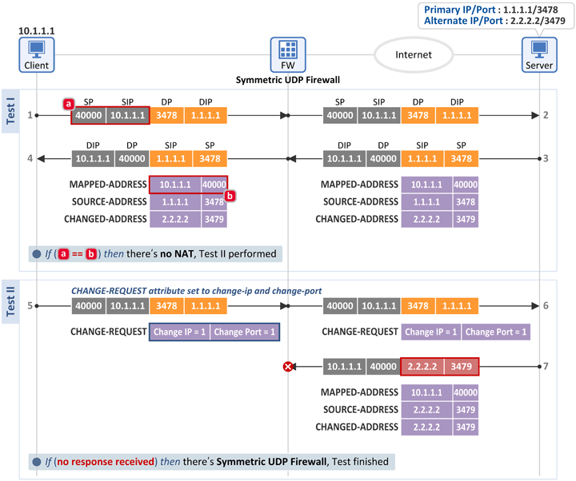
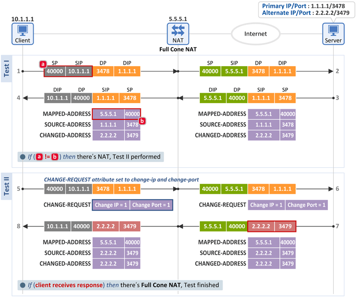
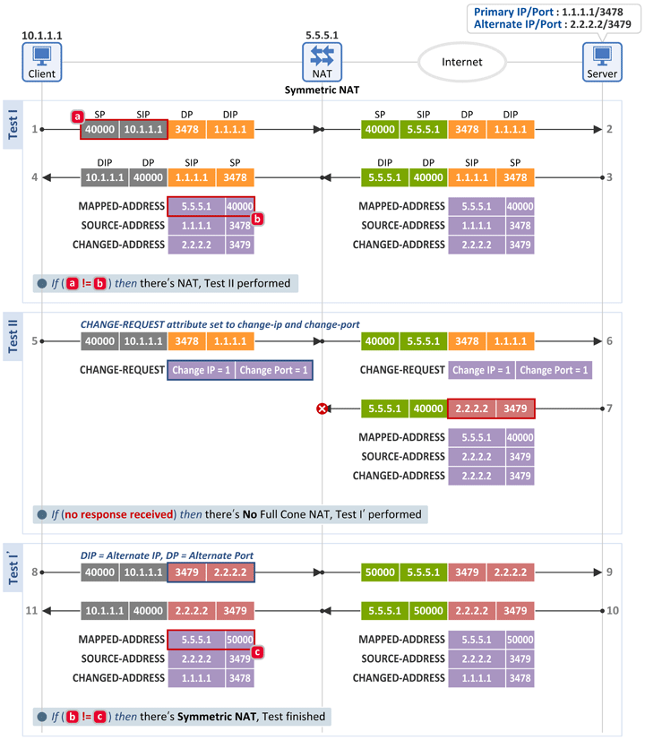
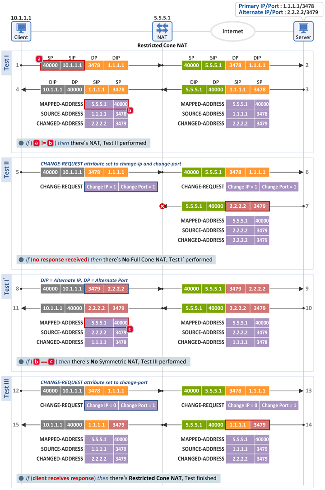
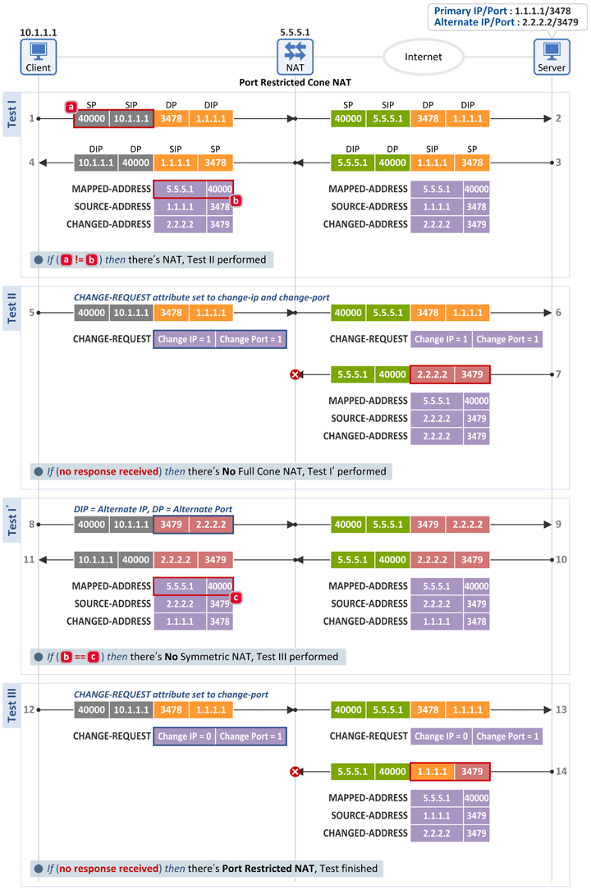
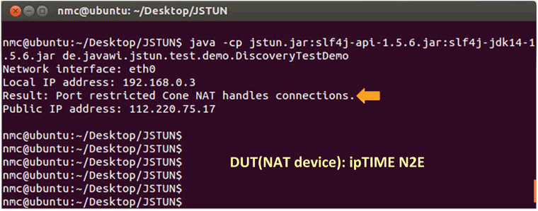

NAT Behavior Discovery Using Classic STUN (RFC 3489)
November 04, 2013 | By Netmanias (tech@netmanias.com)
Let us introduce the NAT behavior discovery
algorithms defined in RFC 3489.
To fully understand what's discussed below, we recommend you read the following posts first:
1. NAT Behavioral Requirements, as Defined by the IETF (RFC 4787) - Part 1. Mapping Behavior
2. NAT Behavioral Requirements, as Defined by the IETF (RFC 4787) - Part 2. Filtering Behavior
3. STUN (RFC 3489) vs. STUN (RFC 5389/5780)
1. NAT Type Discovery
The NAT behavior discovery algorithms defined in RFC 3489 are as follows:
|
1.1 Test (Discovery) Procedure

- Test II checks the presence of a NAT or symmetric UDP firewall, and discovers a full cone NAT
- Test I' discovers a symmetric NAT
- Test III discovers a restricted con NAT or port restricted cone NAT
1.2 No NAT/Firewall (Open Internet)

Test I
- The client sends a Binding Request message to a server (at Primary IP:Primary Port (1.1.1.1:3478)), and receives a Binding Response message back from the server.
- The client then compares the following two fields. If they match, the client knows that there is no NAT between the Internet and itself.
- [a] Binding Request message: IP header source information = 10.1.1.1:40000
- [b] Binding Response message: MAPPED-ADDRESS attribute = 10.1.1.1:40000
- When the server sends a Binding Response message back to the client, it includes the source information of the Binding Request message ([a]) in the MAPPED-ADDRESS field of the Binding Response message ([b]). So, if the two values match, that indicates there is no NAT, and thus no address/port has been translated.
Test II
- Next, the client sends the server a Binding Request message with both the Change IP and Change Port flags from the CHANGE-REQUEST attribute set as 1.
- When the server receives the message, it uses a set of Alternate IP:Alternate Port (2.2.2.2:3479), instead of the Primary IP:Primary Port (1.1.1.1:3478) of the received packet, as its source information for a Binding Response message, then sends the message back to the client.
- If this response is received, the client knows it's not behind a UDP firewall.
- That is, i) the Internal Address/Port (prior to NAT translation) and the External Address/Port (after NAT translation) values were matched, and ii) the inbound packet with the source information (2.2.2.2:3479), which is different from the destination information (1.1.1.1:3478) of the outbound packet, was ALLOWED. This means there is neither NAT nor firewall.
1.3 Symmetric UDP Firewall

Test I
- Same as in the test for Open Internet above
Test II
- The client sends the same Binding Request message as in Open Internet test, but no Binding Response is received.
- Thus, the client knows that there is a UDP symmetric firewall.
- That is, i) the Internal Address/Port and the External Address/Port were matched, and ii) the inbound packet with the source information (2.2.2.2:3479), which is different from the destination information of the outbound packet (1.1.1.1:3478), was DROPPED. This indicates there is a firewall, not a NAT.
1.4 Full Cone NAT

Test I
- The client sends a Binding Request message to a server (at Primary IP:Primary Port (1.1.1.1:3478)), and receives a Binding Response message back from the server.
- The client then compares the following two fields. If they don't match, the client knows that there is a NAT.
- [a] Binding Request message: IP header source information = 10.1.1.1:40000
- [b] Binding Response message: MAPPED-ADDRESS attribute = 5.5.5.1:40000
Test II
- Next, the client sends the server a Binding Request message with both the Change IP and Change Port flags from the CHANGE-REQUEST attribute set as 1.
- When the server receives the message, it uses a set of Alternate IP:Alternate Port (2.2.2.2:3479), instead of the Primary IP:Primary Port (1.1.1.1:3478) of the received packet, as its source information for a Binding Response message. Next, it sends the message back to the client.
- If this response is received, the client knows it's behind a full cone NAT.
- That is, i) the Internal Address/Port (10.1.1.1:40000) and the External Address/Port (5.5.5.1:40000) values were not matched, and ii) the inbound packet with the source information (2.2.2.2:3479), which is different from the destination information of the outbound packet (1.1.1.1:3478), was ALLOWED. This means the client is behind a full cone NAT. Note that symmetric, restricted cone and port restricted cone NATs all DROP inbound packets if their source information (source IP (2.2.2.2) & source Port (3479)) is different from the destination information of the outbound packet (1.1.1.1:3478), as to be explained below.
1.5 Symmetric NAT

Test I
- Same as in the test for a full cone NAT
Test II
- The client sends the same Binding Request message as in the full cone NAT test, but no Binding Response is received.
- Thus, the client knows that there is no full cone NAT, and thus performs Test I'.
Test I'
- The client sends a Binding Request message to a server (at Alternate IP:Alternate Port (2.2.2.2:3479)), and receives a Binding Response message back from the server.
- The client then compares the following two fields. If they don't match, the client knows that there is a symmetric NAT.
- [b] Binding Response message: MAPPED-ADDRESS attribute = 5.5.5.1:40000
- [c] Binding Response message: MAPPED-ADDRESS attribute = 5.5.5.1:50000
- Through the comparison of RFC 3489 and RFC 5780 in the last post, we found that, in terms of NAT mapping behavior, full cone, restricted cone and port restricted cone NATs all use Endpoint-Independent Mapping, whereas a symmetric NAT uses Address and Port-Dependent Mapping. Here in this test, two different packets with different destination information (1.1.1.1:3478 and 2.2.2.2:3470) were mapped to two different External Ports (40000 and 50000). Therefore, the client is behind a symmetric NAT.
1.6 Restricted Cone NAT

Test I
- Same as in the test for a symmetric NAT
Test II
- Same as in the test for a symmetric NAT
Test I'
- The client sends the same Binding Request message as in the symmetric NAT test, and a Binding Response is received.
- The client then compares the following two fields. If they match, the client knows that there is no symmetric NAT. So, it performs Test III.
- [b] Binding Response message: MAPPED-ADDRESS attribute = 5.5.5.1:40000
- [c] Binding Response message: MAPPED-ADDRESS attribute = 5.5.5.1:40000
Test III
- The client sends a server (at Primary IP:Primary Port (1.1.1.1:3478)) a Binding Request message with the Change Port flags from the CHANGE-REQUEST attribute set as 1.
- Then, the server sends the client a Binding Response message after including Primary IP:Alternate Port (1.1.1.1:3479) as its source information. If this message is received, the client knows that it's behind a restricted cone NAT.
- That is, the inbound packet with the source information (1.1.1.1:3479), which has the same destination IP as in the outbound packet, but a different destination port, was ALLOWED. Therefore, the client is behind a restricted cone NAT.
1.7 Port Restricted Cone NAT

Test I
- Same as in the test for a restricted cone NAT
Test II
- Same as in the test for a restricted cone NAT
Test I'
- Same as in the test for a restricted cone NAT
Test III
- The client sends the same Binding Request message as in a restricted cone NAT test, but no Binding Response is received. So, the client knows it's behind a port restricted cone NAT.
- That is, the inbound packet with the source information (1.1.1.1:3479), which has the same destination IP as in the outbound packet, but a different destination Port, was DROPPED. Therefore, the client is behind a restricted cone NAT.
RFC 3489 NAT Behavior Discovery Tools Used in Our Test
- STUN Server: STUNTMAN (RFC 3489/5780 supported), http://www.stunprotocol.org/
- STUN Client: JSTUN, http://jstun.javawi.de/
- Test: STUNTMAN, JSTUN and ipTIME N2E used in classifying NAT types
- Test Result: A port restricted cone NAT discovered
